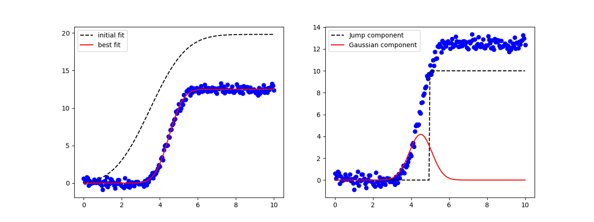

Note
Go to the end to download the full example code
doc_model_composite.py¶
[[Model]]
(Model(jump) <function convolve at 0x17fc4d3a0> Model(gaussian))
[[Fit Statistics]]
# fitting method = leastsq
# function evals = 33
# data points = 201
# variables = 3
chi-square = 24.7562335
reduced chi-square = 0.12503148
Akaike info crit = -414.939746
Bayesian info crit = -405.029832
R-squared = 0.99632577
[[Variables]]
mid: 4 (fixed)
amplitude: 0.62508458 +/- 0.00189732 (0.30%) (init = 1)
center: 5.50853669 +/- 0.00973231 (0.18%) (init = 3.5)
sigma: 0.59576097 +/- 0.01348579 (2.26%) (init = 1.5)
[[Correlations]] (unreported correlations are < 0.100)
C(amplitude, center) = +0.3292
C(amplitude, sigma) = +0.2680
# <examples/doc_model_composite.py>
import matplotlib.pyplot as plt
import numpy as np
from lmfit import CompositeModel, Model
from lmfit.lineshapes import gaussian, step
# create data from broadened step
x = np.linspace(0, 10, 201)
y = step(x, amplitude=12.5, center=4.5, sigma=0.88, form='erf')
np.random.seed(0)
y = y + np.random.normal(scale=0.35, size=x.size)
def jump(x, mid):
"""Heaviside step function."""
o = np.zeros(x.size)
imid = max(np.where(x <= mid)[0])
o[imid:] = 1.0
return o
def convolve(arr, kernel):
"""Simple convolution of two arrays."""
npts = min(arr.size, kernel.size)
pad = np.ones(npts)
tmp = np.concatenate((pad*arr[0], arr, pad*arr[-1]))
out = np.convolve(tmp, kernel, mode='valid')
noff = int((len(out) - npts) / 2)
return out[noff:noff+npts]
# create Composite Model using the custom convolution operator
mod = CompositeModel(Model(jump), Model(gaussian), convolve)
# create parameters for model. Note that 'mid' and 'center' will be highly
# correlated. Since 'mid' is used as an integer index, it will be very
# hard to fit, so we fix its value
pars = mod.make_params(amplitude=dict(value=1, min=0),
center=3.5,
sigma=dict(value=1.5, min=0),
mid=dict(value=4, vary=False))
# fit this model to data array y
result = mod.fit(y, params=pars, x=x)
print(result.fit_report())
# generate components
comps = result.eval_components(x=x)
# plot results
fig, axes = plt.subplots(1, 2, figsize=(12.8, 4.8))
axes[0].plot(x, y, 'bo')
axes[0].plot(x, result.init_fit, 'k--', label='initial fit')
axes[0].plot(x, result.best_fit, 'r-', label='best fit')
axes[0].legend()
axes[1].plot(x, y, 'bo')
axes[1].plot(x, 10*comps['jump'], 'k--', label='Jump component')
axes[1].plot(x, 10*comps['gaussian'], 'r-', label='Gaussian component')
axes[1].legend()
plt.show()
# <end examples/doc_model_composite.py>
Total running time of the script: ( 0 minutes 0.278 seconds)